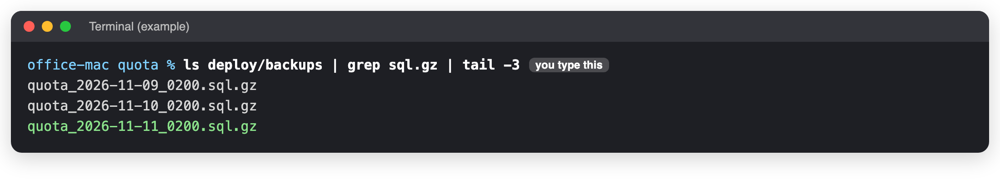
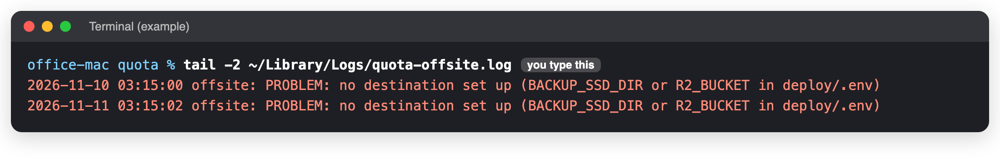

Backups
When to use this: To know where the copies are, and to check they are being made. Time it takes: 5 minutes You need: The Terminal on the office Mac (connect if you are not at it).
Not finished: only one copy exists today
As of 11 November 2026 the backup SSD and the online copy (Cloudflare R2) are not set up, and
neither are the warning e-mails. So every copy stays on the office Mac, the 03:15 job fails every night
with "no destination", and nobody is told if something goes wrong. If the Mac is lost, the data is lost.
Until this is done, check by hand every week (below). The steps to set them up are in deploy/README.md
in the Quota repository, under "Backup and restore" and "Monitoring".
What is automatic
| When | What | Where |
|---|---|---|
| Every night, 02:00 | The database (about 130 MB) and Quota's own files (offer PDFs, mail attachments) | On the Mac, in ~/quota/deploy/backups (30 days of database copies, 7 of files) |
| Before every release | The database | Same folder, named pre-update_... |
| Every night, 03:15 | Everything above, plus the offer pictures | The backup SSD and Cloudflare R2, once set up |
| Every Sunday | A test: the newest copy is loaded into a scratch database and checked | Nothing kept |
Check it by hand
1. Last night's copy exists
cd ~/quota
ls deploy/backups | grep sql.gz | tail -3

You should see
The last line has today's date, for example quota_2026-11-11_0200.sql.gz.
2. The copy off the Mac
tail -2 ~/Library/Logs/quota-offsite.log
Today it says PROBLEM: no destination set up. That is the unfinished part above:

Once the SSD or R2 is set up, the lines say SSD: done and R2: done.
Take a copy by hand
Before anything risky, in the Quota folder:
docker compose -p quota -f deploy/compose.yml -f deploy/compose.office.yml --env-file deploy/.env exec -T db pg_dump -U postgres quota | gzip > deploy/backups/quota_manual.sql.gz
It takes about a minute and prints nothing when it works.
Keep these two safe, outside the Mac
The settings file deploy/.env and the backup encryption password are not in the backups. Keep both in
the password manager. Without them the mailboxes cannot be opened and the online copy cannot be read.
If you see something else
| You see | Do this |
|---|---|
| No file with today's date | The nightly backup stopped. Check the backup box: Daily health check, step 2. |
| "SSD is not there (drive unplugged?)" | Plug the SSD back in. It is checked again the next night. |
| "only N GB free" on the SSD | Tell the developer. |
| "R2: copying ... failed" | Internet down that night, or the R2 key expired. Tell the developer if it repeats. |
Last checked: 2026-11-11